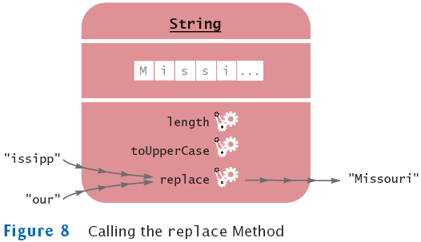

previous
|
start
|
next
A More Complex Call
replace
method carries out a search-and-replace operation
river.replace("issipp", "our") // constructs a new string ("Missouri")
As Figure 8 shows, this method call has
one implicit parameter: the string
"Mississippi"
two explicit parameters: the strings
"issipp"
and
"our"
a return value: the string
"Missouri"

previous
|
start
|
next